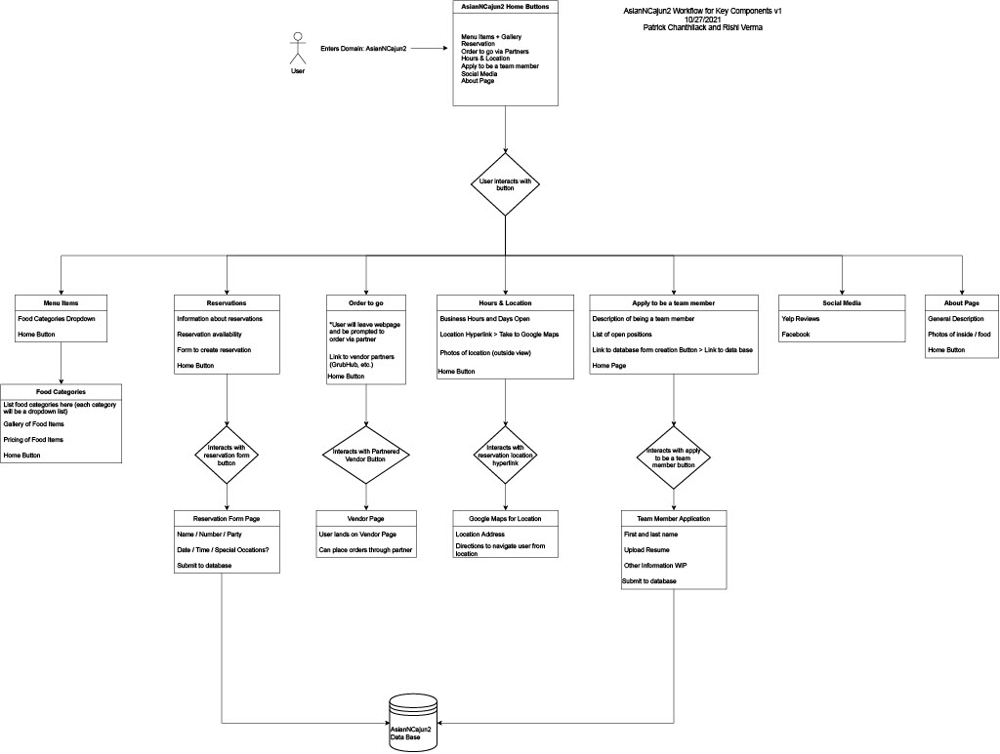

Asian N Cajun 2 is a family owned restaurant specializing in authentic Chinese food and seafood broils with Cajun influences. They are focused on high quality service to their customers by providing an unbeatable dine experience.
Stephanie has recenently acquired Asian N Cajun 2 from a previous owner and is interested in a complete redesign of the previous website. She is looking for a more attractive website that promotes user interaction to establish and revitalize the business
under her family's new ownership.
Our client is looking for a dedicated webpage to promote Asian N Cajun 2 to a wider audience in order to generate more clientele torwards the business. Under new ownership, Stephanie would like to differentiate the business from the previous
owner by creating a new webpage tailored to her standards. The new website will serve as a way to showcase the menu items, interior of the restaurant, and general information of what Asian N Cajun 2 can offer to their customers.
Our proposed solution is to create a more modern webpage using newer technologies to meet the requirements of our client with the change of management. With the creation
of a new webpage, this gives our team a clear understanding of what features will be required.
With the use of HTML/CSS, Bootstrap, and React.js we will create a more modern front end
with the use of high quality photos taken of the business. The backend of the webpage will consist of SQL & Django to hold the valuable customer account information in order to use some
of the webpage features.
Our project will emphasize user interaction by providing high quality images of the menu items to introduce customers to their potential meals
before coming into the business. The website will have user accounts for customers and staff to utilize features that are required by our client.
This includes a reservation system for customers to utilize and for management to view all upcoming & pending reservations. Our team will by using a
python framework for push notifications for all pending and approved reservations.
Showcase your high-fidelity prototype, with screenshots, embedded link to prototype, and/or video demo, etc.
Work Flow Diagram of Asian N Cajun 2 website:

Low Fidelity Mockups of Website:
High Fidelity Prototype:
Give a projected timeline.
You will update this timeline periodically in CSC191.